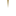

<!doctype html>
<html lang="en">
    <head>
        <meta charset="utf-8">
        <meta http-equiv="X-UA-Compatible" content="IE=edge">
        <meta name="viewport" content="initial-scale=1,user-scalable=no,maximum-scale=1,width=device-width">
        <meta name="mobile-web-app-capable" content="yes">
        <meta name="apple-mobile-web-app-capable" content="yes">
        <link rel="stylesheet" href="css/leaflet.css">
        <link rel="stylesheet" href="css/qgis2web.css"><link rel="stylesheet" href="css/fontawesome-all.min.css">
        <link rel="stylesheet" href="css/leaflet-measure.css">
        <style>
        html, body, #map {
            width: 100%;
            height: 100%;
            padding: 0;
            margin: 0;
        }
        </style>
        <title></title>
    </head>
    <body>
        <div id="map">
        </div>
        <script src="js/qgis2web_expressions.js"></script>
        <script src="js/leaflet.js"></script>
        <script src="js/leaflet.rotatedMarker.js"></script>
        <script src="js/leaflet.pattern.js"></script>
        <script src="js/leaflet-hash.js"></script>
        <script src="js/Autolinker.min.js"></script>
        <script src="js/rbush.min.js"></script>
        <script src="js/labelgun.min.js"></script>
        <script src="js/labels.js"></script>
        <script src="js/leaflet-measure.js"></script>
        <script src="js/proj4.js"></script>
        <script src="js/proj4leaflet.js"></script>
        <script src="data/Roads_3.js"></script>
        <script src="data/Settlements_4.js"></script>
        <script src="data/Legend_5.js"></script>
        <script>
        var highlightLayer;
        function highlightFeature(e) {
            highlightLayer = e.target;

            if (e.target.feature.geometry.type === 'LineString') {
              highlightLayer.setStyle({
                color: '#ffff00',
              });
            } else {
              highlightLayer.setStyle({
                fillColor: '#ffff00',
                fillOpacity: 1
              });
            }
        }
        var crs = new L.Proj.CRS('ESRI:54001', '+proj=eqc +lat_ts=0 +lat_0=0 +lon_0=0 +x_0=0 +y_0=0 +datum=WGS84 +units=m +no_defs', {
            resolutions: [2800, 1400, 700, 350, 175, 84, 42, 21, 11.2, 5.6, 2.8, 1.4, 0.7, 0.35, 0.14, 0.07],
        });
        var map = L.map('map', {
            crs: crs,
            continuousWorld: false,
            worldCopyJump: false, 
            zoomControl:true, maxZoom:3, minZoom:1
        }).fitBounds([[-0.5991650796636697,-1.2414457823838176],[7.206221572405322,8.569953760777203]]);
        var hash = new L.Hash(map);
        map.attributionControl.setPrefix('<a href="https://github.com/tomchadwin/qgis2web" target="_blank">qgis2web</a> &middot; <a href="https://leafletjs.com" title="A JS library for interactive maps">Leaflet</a> &middot; <a href="https://qgis.org">QGIS</a>');
        var autolinker = new Autolinker({truncate: {length: 30, location: 'smart'}});
        var measureControl = new L.Control.Measure({
            position: 'topleft',
            primaryLengthUnit: 'feet',
            secondaryLengthUnit: 'miles',
            primaryAreaUnit: 'sqfeet',
            secondaryAreaUnit: 'sqmiles'
        });
        measureControl.addTo(map);
        document.getElementsByClassName('leaflet-control-measure-toggle')[0]
        .innerHTML = '';
        document.getElementsByClassName('leaflet-control-measure-toggle')[0]
        .className += ' fas fa-ruler';
        var bounds_group = new L.featureGroup([]);
        function setBounds() {
        }
        map.createPane('pane_InnerSeaMap_0');
        map.getPane('pane_InnerSeaMap_0').style.zIndex = 400;
        var img_InnerSeaMap_0 = 'data/InnerSeaMap_0.png';
        var img_bounds_InnerSeaMap_0 = [[-19.794378528986865,-12.008330534448671],[21.11215765364151,14.021918388636513]];
        var layer_InnerSeaMap_0 = new L.imageOverlay(img_InnerSeaMap_0,
                                              img_bounds_InnerSeaMap_0,
                                              {pane: 'pane_InnerSeaMap_0'});
        bounds_group.addLayer(layer_InnerSeaMap_0);
        map.addLayer(layer_InnerSeaMap_0);
        map.createPane('pane_BaseGrid_1');
        map.getPane('pane_BaseGrid_1').style.zIndex = 401;
        var img_BaseGrid_1 = 'data/BaseGrid_1.png';
        var img_bounds_BaseGrid_1 = [[-20.282210638143045,-12.008330534698898],[21.1121576540845,15.5879149934528]];
        var layer_BaseGrid_1 = new L.imageOverlay(img_BaseGrid_1,
                                              img_bounds_BaseGrid_1,
                                              {pane: 'pane_BaseGrid_1'});
        bounds_group.addLayer(layer_BaseGrid_1);
        map.addLayer(layer_BaseGrid_1);
        map.createPane('pane_TerrainGrid_2');
        map.getPane('pane_TerrainGrid_2').style.zIndex = 402;
        var img_TerrainGrid_2 = 'data/TerrainGrid_2.png';
        var img_bounds_TerrainGrid_2 = [[-20.282209646402972,-12.008330620937166],[21.11215864582457,15.587914907214534]];
        var layer_TerrainGrid_2 = new L.imageOverlay(img_TerrainGrid_2,
                                              img_bounds_TerrainGrid_2,
                                              {pane: 'pane_TerrainGrid_2'});
        bounds_group.addLayer(layer_TerrainGrid_2);
        map.addLayer(layer_TerrainGrid_2);
        function pop_Roads_3(feature, layer) {
            layer.on({
                mouseout: function(e) {
                    for (i in e.target._eventParents) {
                        e.target._eventParents[i].resetStyle(e.target);
                    }
                },
                mouseover: highlightFeature,
            });
            var popupContent = '<table>\
                    <tr>\
                        <td colspan="2">' + (feature.properties['id'] !== null ? autolinker.link(feature.properties['id'].toLocaleString()) : '') + '</td>\
                    </tr>\
                </table>';
            layer.bindPopup(popupContent, {maxHeight: 400});
        }

        function style_Roads_3_0() {
            return {
                pane: 'pane_Roads_3',
                opacity: 1,
                color: 'rgba(179,156,107,1.0)',
                dashArray: '',
                lineCap: 'square',
                lineJoin: 'bevel',
                weight: 1.0,
                fillOpacity: 0,
                interactive: true,
            }
        }
        map.createPane('pane_Roads_3');
        map.getPane('pane_Roads_3').style.zIndex = 403;
        map.getPane('pane_Roads_3').style['mix-blend-mode'] = 'normal';
        var layer_Roads_3 = new L.geoJson(json_Roads_3, {
            attribution: '',
            interactive: true,
            dataVar: 'json_Roads_3',
            layerName: 'layer_Roads_3',
            pane: 'pane_Roads_3',
            onEachFeature: pop_Roads_3,
            style: style_Roads_3_0,
        });
        bounds_group.addLayer(layer_Roads_3);
        map.addLayer(layer_Roads_3);
        function pop_Settlements_4(feature, layer) {
            layer.on({
                mouseout: function(e) {
                    for (i in e.target._eventParents) {
                        e.target._eventParents[i].resetStyle(e.target);
                    }
                },
                mouseover: highlightFeature,
            });
            var popupContent = '<table>\
                    <tr>\
                        <td colspan="2">' + (feature.properties['id'] !== null ? autolinker.link(feature.properties['id'].toLocaleString()) : '') + '</td>\
                    </tr>\
                    <tr>\
                        <td colspan="2">' + (feature.properties['Settlement'] !== null ? autolinker.link(feature.properties['Settlement'].toLocaleString()) : '') + '</td>\
                    </tr>\
                    <tr>\
                        <th scope="row">Level</th>\
                        <td>' + (feature.properties['Level'] !== null ? autolinker.link(feature.properties['Level'].toLocaleString()) : '') + '</td>\
                    </tr>\
                    <tr>\
                        <td colspan="2">' + (feature.properties['Description'] !== null ? autolinker.link(feature.properties['Description'].toLocaleString()) : '') + '</td>\
                    </tr>\
                    <tr>\
                        <th scope="row">Government</th>\
                        <td>' + (feature.properties['Government'] !== null ? autolinker.link(feature.properties['Government'].toLocaleString()) : '') + '</td>\
                    </tr>\
                    <tr>\
                        <th scope="row">Blacksmith</th>\
                        <td>' + (feature.properties['Blacksmith'] !== null ? autolinker.link(feature.properties['Blacksmith'].toLocaleString()) : '') + '</td>\
                    </tr>\
                    <tr>\
                        <th scope="row">Academy</th>\
                        <td>' + (feature.properties['Academy'] !== null ? autolinker.link(feature.properties['Academy'].toLocaleString()) : '') + '</td>\
                    </tr>\
                    <tr>\
                        <th scope="row">Runesmith</th>\
                        <td>' + (feature.properties['Runesmith'] !== null ? autolinker.link(feature.properties['Runesmith'].toLocaleString()) : '') + '</td>\
                    </tr>\
                    <tr>\
                        <th scope="row">Apothecary</th>\
                        <td>' + (feature.properties['Apothecary'] !== null ? autolinker.link(feature.properties['Apothecary'].toLocaleString()) : '') + '</td>\
                    </tr>\
                    <tr>\
                        <th scope="row">General Store</th>\
                        <td>' + (feature.properties['General Store'] !== null ? autolinker.link(feature.properties['General Store'].toLocaleString()) : '') + '</td>\
                    </tr>\
                    <tr>\
                        <th scope="row">Stablemaster</th>\
                        <td>' + (feature.properties['Stablemaster'] !== null ? autolinker.link(feature.properties['Stablemaster'].toLocaleString()) : '') + '</td>\
                    </tr>\
                    <tr>\
                        <th scope="row">Curio Shop</th>\
                        <td>' + (feature.properties['Curio Shop'] !== null ? autolinker.link(feature.properties['Curio Shop'].toLocaleString()) : '') + '</td>\
                    </tr>\
                    <tr>\
                        <th scope="row">Shrines</th>\
                        <td>' + (feature.properties['Shrines'] !== null ? autolinker.link(feature.properties['Shrines'].toLocaleString()) : '') + '</td>\
                    </tr>\
                    <tr>\
                        <th scope="row">Guilds</th>\
                        <td>' + (feature.properties['Guilds'] !== null ? autolinker.link(feature.properties['Guilds'].toLocaleString()) : '') + '</td>\
                    </tr>\
                    <tr>\
                        <th scope="row">Grand Guilds</th>\
                        <td>' + (feature.properties['Grand Guilds'] !== null ? autolinker.link(feature.properties['Grand Guilds'].toLocaleString()) : '') + '</td>\
                    </tr>\
                    <tr>\
                        <td colspan="2">' + (feature.properties['Special'] !== null ? autolinker.link(feature.properties['Special'].toLocaleString()) : '') + '</td>\
                    </tr>\
                </table>';
            layer.bindPopup(popupContent, {maxHeight: 400});
        }

        function style_Settlements_4_0() {
            return {
                pane: 'pane_Settlements_4',
        rotationAngle: 0.0,
        rotationOrigin: 'center center',
        icon: L.icon({
            iconUrl: 'markers/Marker.svg',
            iconSize: [76.0, 76.0]
        }),
                interactive: true,
            }
        }
        map.createPane('pane_Settlements_4');
        map.getPane('pane_Settlements_4').style.zIndex = 404;
        map.getPane('pane_Settlements_4').style['mix-blend-mode'] = 'normal';
        var layer_Settlements_4 = new L.geoJson(json_Settlements_4, {
            attribution: '',
            interactive: true,
            dataVar: 'json_Settlements_4',
            layerName: 'layer_Settlements_4',
            pane: 'pane_Settlements_4',
            onEachFeature: pop_Settlements_4,
            pointToLayer: function (feature, latlng) {
                var context = {
                    feature: feature,
                    variables: {}
                };
                return L.marker(latlng, style_Settlements_4_0(feature));
            },
        });
        bounds_group.addLayer(layer_Settlements_4);
        map.addLayer(layer_Settlements_4);
        function pop_Legend_5(feature, layer) {
            layer.on({
                mouseout: function(e) {
                    for (i in e.target._eventParents) {
                        e.target._eventParents[i].resetStyle(e.target);
                    }
                },
                mouseover: highlightFeature,
            });
            var popupContent = '<table>\
                    <tr>\
                        <td colspan="2">' + (feature.properties['id'] !== null ? autolinker.link(feature.properties['id'].toLocaleString()) : '') + '</td>\
                    </tr>\
                </table>';
            layer.bindPopup(popupContent, {maxHeight: 400});
        }

        function style_Legend_5_0(feature) {
            switch(String(feature.properties['id'])) {
                case 'Forests (Difficult Terrain)':
                    return {
                pane: 'pane_Legend_5',
                interactive: true,
            }
                    break;
                case 'Mountains (Greater Difficult Terrain)':
                    return {
                pane: 'pane_Legend_5',
                interactive: true,
            }
                    break;
                case 'Waterways (Difficult Terrain)':
                    return {
                pane: 'pane_Legend_5',
                interactive: true,
            }
                    break;
            }
        }
        map.createPane('pane_Legend_5');
        map.getPane('pane_Legend_5').style.zIndex = 405;
        map.getPane('pane_Legend_5').style['mix-blend-mode'] = 'normal';
        var layer_Legend_5 = new L.geoJson(json_Legend_5, {
            attribution: '',
            interactive: true,
            dataVar: 'json_Legend_5',
            layerName: 'layer_Legend_5',
            pane: 'pane_Legend_5',
            onEachFeature: pop_Legend_5,
            pointToLayer: function (feature, latlng) {
                var context = {
                    feature: feature,
                    variables: {}
                };
                return L.circleMarker(latlng, style_Legend_5_0(feature));
            },
        });
        bounds_group.addLayer(layer_Legend_5);
        map.addLayer(layer_Legend_5);
            var abstract = new L.Control({'position':'bottomright'});
            abstract.onAdd = function (map) {
                this._div = L.DomUtil.create('div',
                'leaflet-control abstract');
                this._div.id = 'abstract'
                    this._div.setAttribute("onmouseenter", "abstract.show()");
                    this._div.setAttribute("onmouseleave", "abstract.hide()");
                    this.hide();
                    return this._div;
                };
                abstract.hide = function () {
                    this._div.classList.remove("abstractUncollapsed");
                    this._div.classList.add("abstract");
                    this._div.innerHTML = 'i'
                }
                abstract.show = function () {
                    this._div.classList.remove("abstract");
                    this._div.classList.add("abstractUncollapsed");
                    this._div.innerHTML = 'This map uses trademarks and/or copyrights owned by Paizo Inc., used under Paizo\'s Community Use Policy (paizo.com/communityuse). We are expressly prohibited from charging you to use or access this content. This map is not published, endorsed, or specifically approved by Paizo. For more information about Paizo Inc. and Paizo products, visit paizo.com.';
            };
            abstract.addTo(map);
        var baseMaps = {};
        L.control.layers(baseMaps,{'Legend<br /><table><tr><td style="text-align: center;"></td><td>Forests</td></tr><tr><td style="text-align: center;"></td><td>Mountains</td></tr><tr><td style="text-align: center;"></td><td>Waterways</td></tr></table>': layer_Legend_5,' Settlements': layer_Settlements_4,' Roads': layer_Roads_3,"Terrain Grid": layer_TerrainGrid_2,"Base Grid": layer_BaseGrid_1,"Inner Sea Map": layer_InnerSeaMap_0,},{collapsed:false}).addTo(map);
        setBounds();
        var i = 0;
        layer_Settlements_4.eachLayer(function(layer) {
            var context = {
                feature: layer.feature,
                variables: {}
            };
            layer.bindTooltip((layer.feature.properties['Settlement'] !== null?String('<div style="color: #ffffff; font-size: 20pt; font-family: \'Georgia\', sans-serif;">' + layer.feature.properties['Settlement']) + '</div>':''), {permanent: true, offset: [-0, -16], className: 'css_Settlements_4'});
            labels.push(layer);
            totalMarkers += 1;
              layer.added = true;
              addLabel(layer, i);
              i++;
        });
        L.ImageOverlay.include({
            getBounds: function () {
                return this._bounds;
            }
        });
        resetLabels([layer_Settlements_4]);
        map.on("zoomend", function(){
            resetLabels([layer_Settlements_4]);
        });
        map.on("layeradd", function(){
            resetLabels([layer_Settlements_4]);
        });
        map.on("layerremove", function(){
            resetLabels([layer_Settlements_4]);
        });
        </script>
    </body>
</html>
